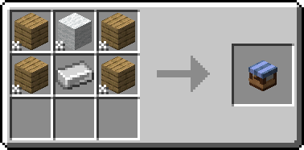

mc.datbogie.org 1.21.7 (latest)*Vanilla or FabricNone*
This site contains information about various mods present on the Survival Latest server.
Click on the name of a mod to expand the information about it—any text with a dropdown arrow on its left can expand like this.
Click on the 'Help' tab on the top to view said information!
Hover over footnotes (*) to view more information!
Color palette: Catppuccin Macchiato.
Everything here spaghetti-coded by me.
Repository: GitHub.
Slots:
Axes can now be enchanted with:
Swords can now be enchanted with:
Bows can now be enchanted with:
Crossbows can now be enchanted with:
Recipe:
Usage:
Advanced Shulker Boxes
Right-click while holding a shulker box to open it without placing it down.
Sneak and right-click to place the shulker box down like normal.
Armor Stand Editor
Open the Editor
Right-click an armor stand with a stick to open the editor.
Tools
Use (left/right-click with or drop) a tool to be given its set of controls.
Sneaking and scrolling with a control will increase or decrease the amount by which a transformation is applied onto the armor stand.
Move
Axis
Use to switch the movement axis between:
Right-click or drop to go forward through the list; left-click to go backward.
Move 0.5 blocks backwards
Use to move the armor stand 0.5 blocks towards the player, or negative on the chosen axis.
Move 1 block backwards
Use to move the armor stand 1 block towards the player, or negative on the chosen axis.
Rotate 30 degrees
Right-click or drop to rotate the armor stand 30 degrees counter-clockwise.
Left-click to rotate it 30 degrees clockwise.
Move 1 block forwards
Use to move the armor stand 1 block away from the player, or positive on the chosen axis.
Move 0.5 blocks forwards
Use to move the armor stand 0.5 blocks away from the player, or positive on the chosen axis.
Teleport to Player
Use to warp the armor stand to the player's decimal position (not rotation).
Copy player's rotation
Use to make the armor stand face the same direction as the player.
Pose Editor
This editor opens when you use one of the controls under the Pose tool.
Axis
Use to switch the rotation axis between:
Right-click or drop to go forward through the list; left-click to go backward.
Rotate -15.0 degrees
Use to rotate the armor stand -15 degrees on the chosen axis.
Rotate -30 degrees
Use to rotate the armor stand -30 degrees on the chosen axis.
Rotate 30 degrees
Use to rotate the armor stand 30 degrees on the chosen axis.
Rotate 15.0 degrees
Use to rotate the armor stand 15 degrees on the chosen axis.
Reset pose
Use to reset the rotation of the part of the armor stand being edited to 0 on all axes.
Inventory
Use to open a screen wherein the armor stand can be equipped with armor, or given items in its hands.
The glass pane under each slot can be used to prevent players from taking the items when right-clicking on the armor stand.
Rename
Use to open a screen wherein the armor stand can be given a custom name.
This name will be displayed above its head as a nametag, like a player's.
Properties
Use to be given a set of controls which can be used to change the following properties:
Scale
Use to open the scale editor consisting of the following controls:
Decrease scale by 0.1
Shrinks the armor stand by 0.05 blocks.
Decrease scale by 0.2
Shrinks the armor stand by 0.1 blocks.
Scale:
When used, opens a menu wherein the scale of the armor stand can be set.
0.5 scale = 1 block tall; 1.0 scale = 2 blocks tall.
Increase scale by 0.1
Grows the armor stand by 0.05 blocks.
Increase scale by 0.2
Grows the armor stand by 0.1 blocks.
Reset scale
Sets the armor stand's scale to 1.0 (2 blocks tall).
Copying/Presets
Use to save or load presets.
Copy Settings
Copy the armor stand's movement, rotation, pose, name, inventory, and property data.
Saved Presets
Opens a menu wherein user-defined presets can be copied.
Global Presets
Opens a menu wherein presets included in the mod can be copied.
Paste Settings
Appears once armor stand data has been copied.
Pastes the copied data (excluding inventory data) onto the current armor stand.
Paste Settings and Inventory
Appears once armor stand data, including non-empty inventory data, has been copied.
Pastes the copied data onto the current armor stand.
Create Preset
Appears once armor stand data has been copied.
Opens a menu wherein the copied data can be saved as a user-defined preset.
Multiple presets can share the same name; to update a preset, delete the old version of it first to update it.
Audaki Cart Engine
Faster Travel
Minecarts are now faster.
Banner Bedsheets
Placement
Sneak while placing a banner on the very front or back of a bed to apply that banner as sheets.
Two sets of sheets can be applied to the bed if placed from the front and back.
Banner patterns will face away from you when applied.
Removal
Break the bed to remove any attached sheets.
Sheets may take a few seconds to drop after the bed is broken.
Banner Flags
Placement
Sneak while placing a banner on a pole* to place a flag.
You must be facing the pole to place the banner as a flag.
Removal
Break the pole to break all of the flags placed on it.
Flags may take a few seconds to drop after the pole is broken.
Blasting From Mars
Sand → Glass
Blast sand into glass.
Raw Metal Blocks → Metal Blocks
Blasting raw metal blocks will yield the corresponding metal block.
Eg. blasting a block of raw iron yields a block of iron.
Bottled Air
Using a Glass Bottle underwater refills 5 air bubbles.
Holding a fire-type* item in your offhand slot will give the bottle back.
There's a 65% chance that the bottle is destroyed in the process, resulting in not recieving the bottle back.
Bouncier Beds
Five Little Monkeys...
Jumping or bouncing on a bed will launch you roughly 1.5 blocks into the air.
Carpet
Chain Stone
Chains act as two-sided slime blocks when pushed by pistons; the ends pull other blocks with them.
Movable Block Entities
Pistons can move hoppers, dispensers, droppers, etc.
Note: pistons CANNOT move chests, shulker boxes, barrels, and other lockable containers.*
Day Dream
I Need String!!!
Go to bed during the day to sleep through the day.
Expanded Enchanting
Melee Weapons
Ranged Weapons
Compatible Enchantments
Previously incompatible enchantments can now all be applied to the same item.
Eg. a sword can now be enchanted with Sharpness, Smite, and Bane of Arthropods; a bow can have both Infinity and Mending, etc.
Giant Spawn
Beware the giants!
Giants can spawn. They're fast, strong, and only spawn on the surface.
Grindstone Sharper Tools
Sharpening
Sneak and right-click a grindstone with a weapon to sharpen it.
This will give it 32 "sharpened" uses, wherein the weapon deals 1.5x damage.
Sharpening tools will only make them do more damage; it will not make them mine faster.
Sharpening tools doesn't cost anything.
Hey That's Mine (HTM)
Permissions/Trust
Local vs Global Trust
Local trust is specific to a container, while global trust applies to all containers.
If you trust a player globally, they can access all of your containers regardless of their protection type.
Trusting Players
To trust a player locally, run:
/htm trust [@]
Where [@] is the name of the player to be trusted.
Then, click on the container.
To trust a player globally, run:
/htm trust [@] global
Where [@] is the name of the player to be trusted.
Untrusting Players
To untrust a player locally, run:
/htm untrust [@]
Where [@] is the name of the player to be trusted.
Then, click on the container.
To untrust a player globally, run:
/htm untrust [@] global
Where [@] is the name of the player to be trusted.
Untrusting a player globally DOESN'T remove their local trust for your containers.
Transferring Ownership
To transfer ownership of a container to another player, run:
/htm untrust [@]
Where [@] is the name of the player to be trusted.
Then, click on the container.
This CANNOT be undone (except by the new owner transferring ownership back to you).
Container Protection Types
Locked Containers
Containers with this protection type cannot be broken by untrusted players.
Setup
/htm set KEY
Then, click on the container.
About
Players will need to hold a key while opening the container to access it, unless they have been explicitly trusted either globally or for the specified container.
Any item can be used as a key, but one should ideally use an item with a unique name to avoid others breaking in.
If the key is a stick named "Key", any old stick won't work, but any stick named "Key" will.
The same key can be used for multiple containers, but each container may only have one key.
Private Containers
Containers with this protection type cannot be broken by untrusted players.
Setup
/htm set PRIVATE
Then, click on the container.
About
Players will need to be explicitly trusted either globally or for the specified container to access it.
Public Containers
Setup
/htm set PUBLIC
Then, click on the container.
About
Public containers act as vanilla containers; they can be accessed by anyone, regardless of trust.
Remove Container Protection
To remove all protection from a container, run:
/htm remove
Then, click on the container.
Container Protection Flags
HOPPERS
This flag doesn't currently work. This page will be updated when/if it does.
Setup
/htm flag HOPPERS [V]
Where [V] is either true or false.
Then, click on the container.
About
If enabled, hoppers can pull items from the container.
This is enabled by default.
This does not affect the ability to pipe items into the container using hoppers.
Miscellaneous
Info
Usage
To view the protection information of a container, run:
/htm info
Then, click on the container.
About
When used on another player's container, a message is displayed containing:
When used on your own container, a message is displayed containing:
Info (Flags)
To view the protection flags of a container, run:
/htm flags
Then, click on the container.
Quiet
To toggle HTM sending messages when changing options, run:
/htm quiet
Persist
To toggle HTM continuing to apply options when clicking on containers after clicking the first time, run:
/htm persist
Increased Rails Recipe Output
Surplus of Rails
Crafting rails yields 32 rails instead of 16.
Surplus of Powered Rails
Crafting powered rails yields 16 powered rails instead of 6.
Surplus of Detector Rails
Crafting detector rails yields 16 detector rails instead of 6.
Surplus of Activator Rails
Crafting activator rails yields 16 activator rails instead of 6.
Invisible Frames
Evanesco!
Sneak and right-click on an item frame to toggle its invisibility.
Keep Some Inventory
My Poor Pickaxe!
Certain items are kept on death:
Mythic Mobs
Mythical Monsters
Mobs have a 1/200 chance to spawn as a mythic mob.
They're very fast, have more health, and are immune to fire.
Their bossbar will appear when they're within 30 blocks of you.
Neutral Animals
Behavior
Certain Previously passive mobs will now follow and attack players for 1–1.5 hearts when attacked.
These include:
Refined Advancements
A Whole New World...
...of advancements to achieve. Have fun!
Silk Touch Spawners
Break a monster spawner with a silk touch pickaxe to obtain it.
Sit!
Sitting
Double-tap sneak while looking down to sit down anywhere.
Right-click with an empty hand on the top of a stair or top of a bottom slab to sit on it.
Crawling
Double-tap sneak while looking down to crawl when your feet are pushed up against a one-block gap*.
Softer Hay Bales
Softer Landing
Hay Bales now eliminate fall damage when falling on them.
Stonecutter Damage
Sharp Things Sting!
Stonecutters deal 0.5 hearts of damage to non-villagers standing on them.
Super Enchants
Free Anvil
Throw two enchanted items on top of an anvil to combine their enchantments for free.
Doing so increase enchantment levels to above their normal cap.
These items must be the same item type and of the same material, or one may be an enchanted book.
Eg. combining two diamond swords with different enchantments is valid, and so is combining a diamond sword with an enchanted book, or combining two enchanted books.
Uncapped Enchantment Levels
Throwing two enchanted items with the same enchantment of the same level will result in a combined item with an increased enchantment level, regardless of the normal level cap.
For instance, combining two sharpness V books will result in a sharpness VI book.
Combining enchants that only have one tier will result in no change; combining two silk touch books will just give normal silk touch.
Combining two items with differing enchantment levels of the same enchant will defer to the higher level of the two.
Surface Mushrooms
Mushrooms Everywhere!
Mushrooms can now be placed anywhere, any time.
Universal Shops
Trade Shop

Stock
To stock it, place a container on the face of the shop that lines up with the edge of a block.
Eg. if you place it on the ground, the bottom face lines up with the block below it; place a container there.
Currency
When the "Hoppers" option is enabled, placing a hopper below the shop will pull earned currency from it.
This can be used to store greater amounts of currency, or automatically transfer it to a storage system.
Selling
Types:
Price Type:
Free
The player simply clicks the item to get as much of it as they want.
Item
The player needs an amount of the specified item in their inventory to purchase the item.
Purchasing costs said amount of said item.
Stock Type:
Equal Item
The player clicks on the item to purchase the specified amount of it.
Only one type of item can be sold per shop when configured this way.
Any Stack
The player clicks on the item to open another menu where they can select any stack in the stock container to purchase.
The price remains constant regardless of item type or stack size.
Multiple types of items can be sold per shop when configured this way.
The menu displays the items in the same order and stack size as the stock container; it does not preserve any gaps between items.
Removal
Before removing it, make sure the currency storage is empty; it will not break otherwise.
Upgraded Mobs
Information taken verbatim from here.
General
All mobs have increased follow range, allowing them to see you from farther away. Their movement speed is also increased slightly to make running away a little bit harder.
Zombies
Zombies (including drowned, husks, and zombie villagers) receive two upgrades that make fighting a horde a little more threatening:
Drowned
In addition to the default zombie dash/bite, drowned get the following two changes:
Elder Guardians
Elder guardians have been upgraded to be full fledged boss mobs.
Evokers
Evokers are now mini-bosses that receive the following upgrades:
Piglin Brutes
While their damage is untouched, piglin brutes now receive a few upgrades that make it harder to fight them than just knocking them back while you stand still:
Pillagers
Pillagers aren't holding back anymore.
Spiders
Everyone loves spiders.
Witches
For as rare as they are, witches are a little too easy.